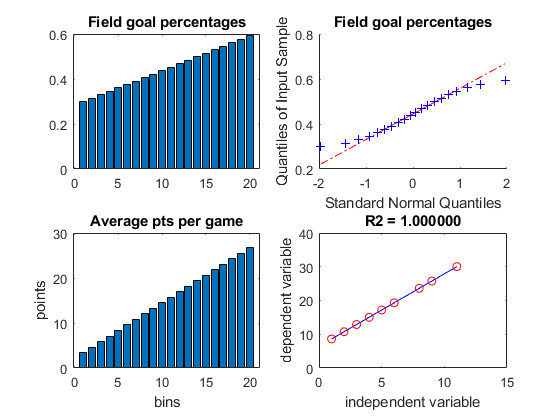
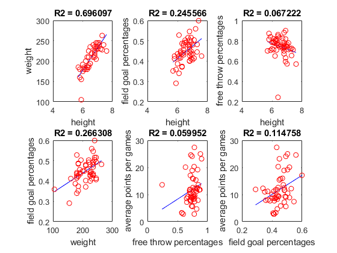

Contents
clear all
close all
Problem 1
type('MyHistogram.m')
function [xCen, n] = MyHistogram(dataVec, nBins)
%{
takes in data vector and desired number of bins and
computes, edges, #elements in bins, and center pt of the bins
Alyssa Rose HW8 03-28-18
%}
%finds max and mins in dataVec
maxVec = max(dataVec);
minVec = min(dataVec);
%finds bin width from range of dataVec
binWidth = (maxVec - minVec)/nBins;
xCen=[];
n=[];
edge=[];
%computes info for last element
edge(nBins) = maxVec;
edge(nBins-1) = maxVec - binWidth;
xCen(nBins) = ((edge(nBins) + edge(nBins-1))/2);
n(nBins) = length(find(edge(nBins-1)<=dataVec & edge(nBins)>=dataVec));
for k = 1:nBins-1
edge(1) = [minVec];
%computes rightward edge
edge(k+1) = edge(k) + binWidth;
%finds center pt
xCen(k) = ((edge(k+1) + edge(k))/2);
%finds #elements in each bun
n(k) = length(find(edge(k)<=dataVec & edge(k+1)>dataVec));
end
end
Problem 2
type('BBallStats.m')
fprintf('\n------------------------------------\n');
BBallStats;
load basketballData.mat
%{
graphs data using histograms and qqplots
Alyssa Rose HW8 03-28-18
%}
figure(1)
subplot(2,2,1)
bar(MyHistogram(FieldGoalPercentage, 20))
title('Field goal percentages')
subplot(2,2,2)
qqplot(MyHistogram(FieldGoalPercentage, 20))
title('Field goal percentages')
subplot(2,2,3)
bar(MyHistogram(AveragePointsPerGame, 20))
title('Average pts per game')
xlabel('bins')
ylabel('points')
subplot(2,2,4)
qqplot(MyHistogram(AveragePointsPerGame,20))
title('Average pts per game')
%{
the two right graphs appear to follow gaussian since
their lines are mostly linear. The 2 left histogram graphs
do not appear to look graphically gaussian.
%}
figure(2)
heightVec = (HeightFeet >= 6.5)';
boxplot(AveragePointsPerGame, heightVec)
xlabel('Height: 1=>6.5, 0<6.5 ft')
ylabel('Avg pts per game')
title('Points per game vs height')
%{
Height does not seem to correlate with avg pts per game.
The taller players appear to have more range in pts scored
but the shorter players have higher median pts.
%}
------------------------------------
Problem 3
type('CalcRsquared.m')
fprintf('\n------------------------------------\n');
type('MyLinefit.m')
Problem 4
type('TestLinearFit.m')
fprintf('\n------------------------------------\n');
TestLinearFit;
function [yTest,yFit, yFit1samp] = TestLinearFit
%{
tests MyLinefit function with pre chosen x, y, and b values
Alyssa Rose HW8 03-28-18
%}
%creates variables
x = [1,4,2,6,8,4,5,3,11,9];
m = 2.145;
b = 6.4532;
%finds y vec from pre declared variables
yTest = (m.*x)+b;
%stores line approx of x and yTest in yFit
[yFit,coeff,rSq] = MyLinefit(x,yTest,1);
fprintf('True slope=%.5f True intercept=%.5f\nEst slope=%.5f Est intercept=%.5f\n\n', m,b,coeff(1,1), coeff(2,1))
%intentionally passes in faulty parameters
%to check NaN returned
[yFit1samp,coeff,rSq] = MyLinefit(x,[1],1);
fprintf('x || y value doesn''t meet conditions, yFit1samp=%f', yFit1samp);
end
------------------------------------
True slope=2.14500 True intercept=6.45320
Est slope=2.14500 Est intercept=6.45320
x || y value doesn't meet conditions, yFit1samp=NaN
Problem 5
type('BasketballCorrelations.m');
fprintf('\n------------------------------------\n');
BasketballCorrelations
load basketballData.mat
%{
finds correlations from data in basketballData
Alyssa Rose HW8 03-28-18
%}
figure(2)
%creates scatter plot height vs. weight
subplot(2,3,1)
scatter(HeightFeet, WeightLbs);
MyLinefit(HeightFeet, WeightLbs,1);
xlabel('height')
ylabel('weight')
%there is a strong correlation with height vs. weight, since the R value
%is close to 1. There is 1 outlier (tall but low weight)
%creates scatter plot height vs. field goal %
subplot(2,3,2)
scatter(HeightFeet, FieldGoalPercentage);
MyLinefit(HeightFeet, FieldGoalPercentage,1);
xlabel('height')
ylabel('field goal percentages')
%not a strong correlation; many pts deviate from the line although the R
%value is closer to 1 than other graphs
%creates scatter plot height vs. free throw %
subplot(2,3,3)
scatter(HeightFeet, FreeThrowPercentage);
MyLinefit(HeightFeet, FreeThrowPercentage,1);
xlabel('height')
ylabel('free throw percentages')
%moderate correlation; the R value deviated more than expected and their
%is an outlier (very low %)
%creates scatter plot weight vs. field goal %
subplot(2,3,4)
scatter(WeightLbs,FieldGoalPercentage,'g');
MyLinefit(WeightLbs,FieldGoalPercentage,1);
xlabel('weight')
ylabel('field goal percentages')
%appears to not be a strong correlation, R value predicts it to be true
%about 25% of the time, considerable amount of outliers, especially
%the low weight but mid field goal % . This seems to be more about random
%correlation than actual causation, considering the low R value (but R
%values for weight vs field% and height vs. field% are extremely similar.
%creates scatter plot free throw vs. avg pts
subplot(2,3,5)
scatter(FreeThrowPercentage, AveragePointsPerGame,'g');
MyLinefit(FreeThrowPercentage, AveragePointsPerGame,1);
xlabel('free throw percentages')
ylabel('average points per games')
%weakest correlation of all the graphs (lowest R value). Free throw % is
%not a strong predictor for avg pts in game
%creates scatter plot field goal vs. avg pts
subplot(2,3,6)
scatter(FieldGoalPercentage, AveragePointsPerGame,'g');
MyLinefit(FieldGoalPercentage, AveragePointsPerGame,1);
xlabel('field goal percentages')
ylabel('average points per games')
%many outliers and very weak correlation, although field goal % and avg pts
%correlation is stronger than avg pts and free throw % (field goal more
%important)
------------------------------------
